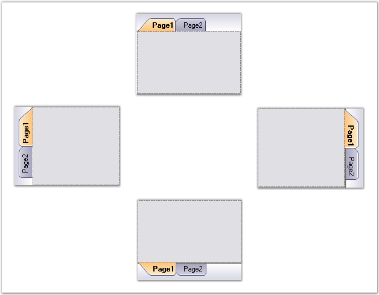

Alignment of the Tabs can be set through the below properties.
|
TabControlAdv Property |
Description |
|
Alignment |
Specifies the alignment of tabitems with respect to the tab pages. The options include:
· Top · Bottom · Left · Right |
|
VerticalAlignment |
Specifies whether the tabs are aligned to the Top, Bottom or based on the RightToLeft property when aligned vertically. |
|
TabGap |
Specifies the space between the tabitems. |
|
Top |
Gets / sets the distance, in pixels, between the top edge of the control and the top edge of the container's client area. |
|
Right |
Gets / sets the distance, in pixels, between the right edge of the control and the left edge of the container's client area. |

Figure 1055: TabControlAdv with Alignment set to Left, Top, Right and Bottom
|
[C#]
this.tabControlAdv1.Alignment = System.Windows.Forms.TabAlignment.Left; this.tabControlAdv1.TabGap = 2; |
|
[VB.NET]
Me.tabControlAdv1.Alignment = System.Windows.Forms.TabAlignment.Left Me.tabControlAdv1.TabGap = 2 |
See Also